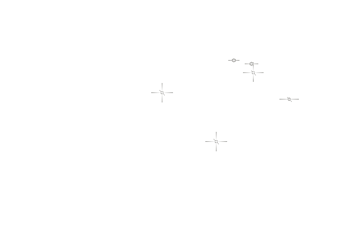
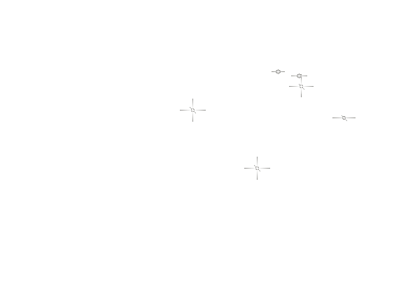

Welcome to Even's bag
back
 

一个梦
Vincent Van Gogh
宿舍
室友 地板 毯子 睡觉
CNY 576
群聊 管理员 初中的好朋友
图书馆
志愿者 画展 梵高
Als je een stem in je hoort zeggen
'je kunt niet schilderen',
dan schilder je zeker,
en die stem zal tot zwijgen worden gebracht.
二〇二四年三月七日
凌晨五点五十一分